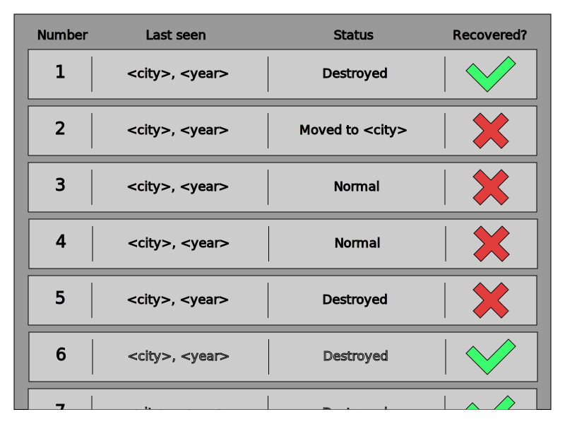

Отображение информации о чёрных ящиках
Описание
Вкладка информации о чёрных ящиках находится на главном игровом экране. Игрок может просмотреть информацию о каждом чёрном ящике. Для каждого ящика показаны:
- Последние известные год и локация;
- Последний статус: нормальное состояние, перемещён в другой город, уничтожен.
- Были ли уже считаны данные.
Цели
Игроку нужно видеть свой внутриигровой прогресс и вспомогательную информацию, позволяющую ему продвинуться дальше.
Первое впечатление
Игрок впервые встречается с вкладкой, когда начинает игру и переключает активную вкладку. Он видит:
- Начальное положение каждого ящика;
- То, что в последний раз каждый ящик наблюдался в нулевой год;
- То, что каждый ящик в нормальном состоянии и данные с него не считаны.
User Story
Игрок хочет отследить ещё не считанный ящик: игрок выбирает ящик из числа несчитанных и планирует свои дальнейшие действия в зависимости от его статуса.
Игрок хочет понять, данные с каких ящиков он может считать: игрок просматривает список и выбирает уничтоженные ящики, данные с которых пока не были считаны.
Пересечения
- Правила, по которым ящики могут перемещаться по миру и уничтожаться (возможные статусы);
- Посещение городов (посещение города может дать информацию о чёрном ящике);
- Влияние на моральный профиль ("откат" последнего наблюдаемого состояния).
Сущности
Список чёрных ящиков с сопутствующей информацией — единственная сущность.
UI

Итерации
- Разработка графического интерфейса;
- Привязка графического интерфейса к игровому состоянию (корректное заполнение и обновление);
- Тестирование.